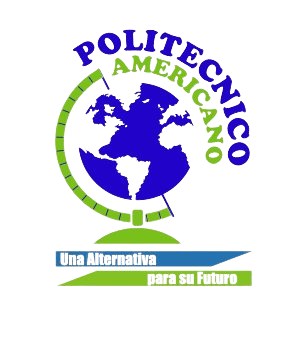

FORMACIÓN ACADÉMICA
Educación secundaria
Secundaria (sexto-once)
ESCUELA NORMAL SUPERIOR DE NEIVA 2017-2022Estudie desde sexto hasta once en la Escuela Normal Superior De Neiva, la cual es reconocida por formar maestros, razón por la cual, tuve la materia de pedagogía durante toda la secundaria, además de realizar prácticas con estudiantes de primaria durante mi último año escolar (11) y graduarme como bachiller con profundización en pedagogía en el año 2022.

Educación Tecnica
Tecnico en Sistemas
POLITECNICO AMERICANO 2023Luego de graduarme como bachiller, ingrese a estudiar un técnico en sistemas y mantenimiento de cómputo en el Politécnico Americano. Actualmente, me encuentro cursando el segundo módulo,
